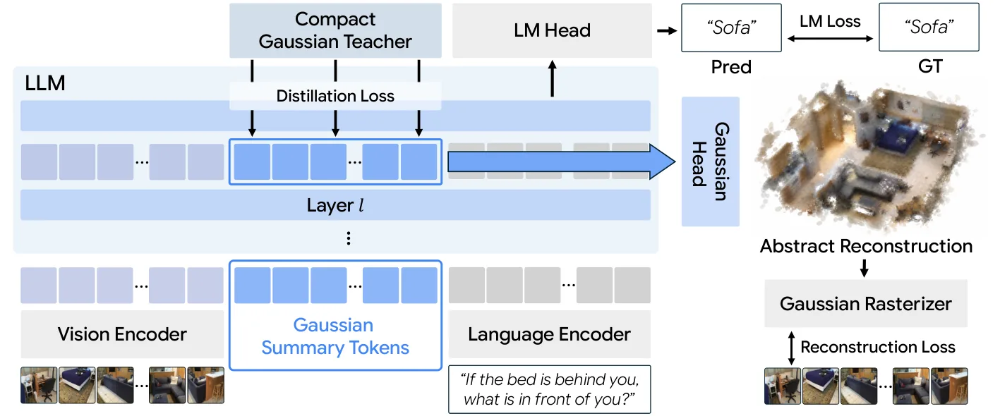
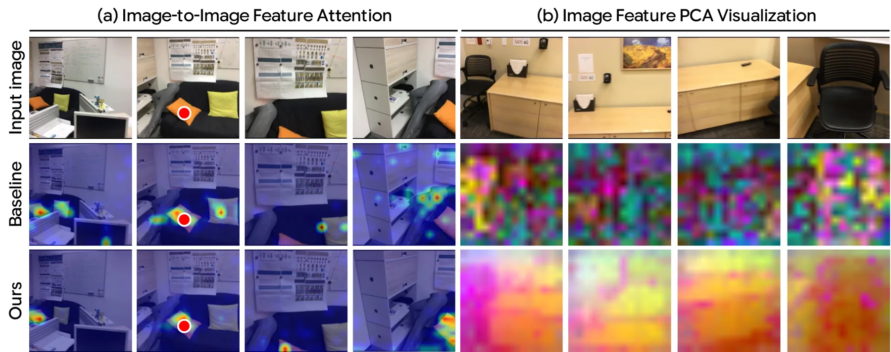
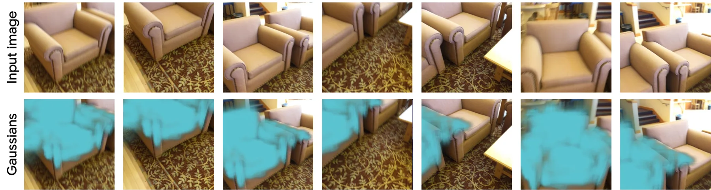
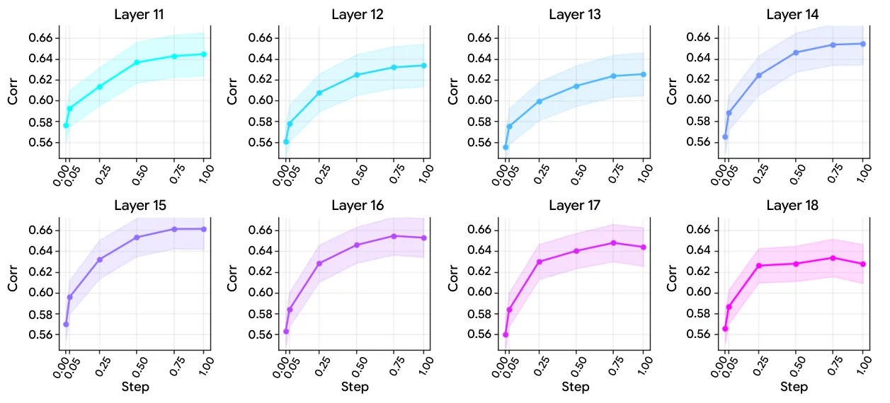
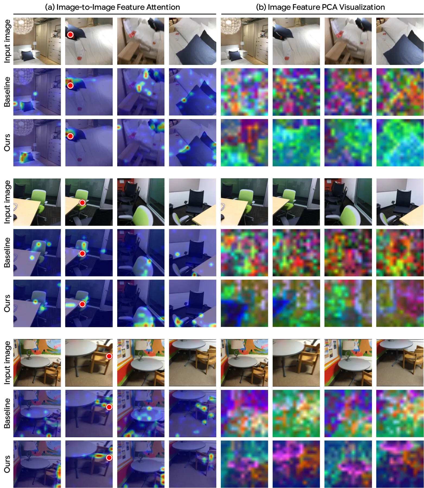
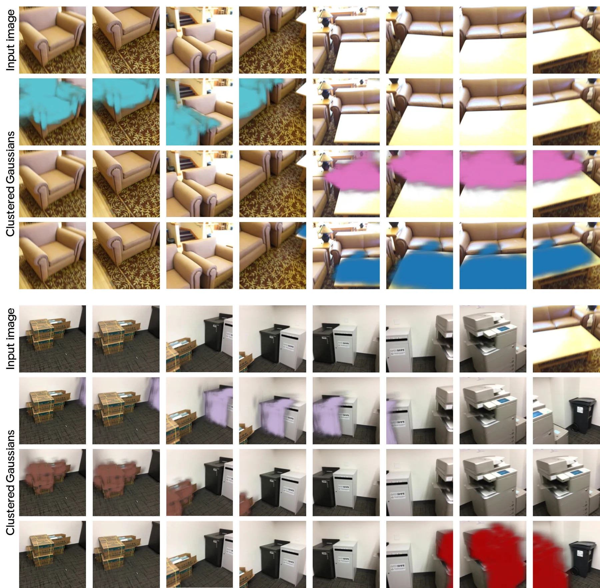

Imagine3D-LLM：让多模态大模型先想象 3D 场景再回答
Imagine3D-LLM: Teaching MLLMs to Imagine 3D Scenes Before Answering
在 MLLM 中插入少量可学高斯拉丁 token 并在中间层解码成紧凑 3DGS，与语言建模联合训练（外加紧凑高斯教师蒸馏加速）；SPAR-Bench 平均 68.5（超 7B 最强基线 5.2 分），SQA3D EM 63.8、Real-3DQA EM 39.2 均刷新。
SPAR
SQA3D EM
Real-3DQA EM
summary tokens
作者、单位与技术谱系 · Research context
作者与单位
研究脉络
- 3D MLLM 谱系（Video-3D-LLM、LLaVA-3D、Ross3D 等）上游方向关系：Imagine3D-LLM 在同一 3D MLLM 路线上推进，并把这些模型作为主要对照。[论文第 4 节表 1、表 2]
- ZipSplat 紧凑高斯教师方法基座关系：以 ZipSplat 作为紧凑 3DGS 教师，蒸馏其 query token 与高斯参数；教师 token 数与摘要 token 对齐。[论文第 3.2.2 节]
- 本篇推进：心理重建 + 高斯摘要 token本篇推进关系：把“先想象紧凑 3D 再回答”实现为可学的高斯摘要 token 与联合重建目标，并用蒸馏使其可训。[论文第 3、4.2 节]
合作网络
- KAIST AI ↔ ETH Zürich 跨机构署名KAIST AI → ETH Zürich关系：共同署名（含访学经历）[arXiv 首页署名]
- CVLab KAIST 官方项目页KAIST AI → cvlab-kaist.github.io/Imagine3D-LLM关系：官方项目页[项目页]
作者与单位取自论文首页署名；脉络基于引用与自述；只记录公开署名与官方项目页，不推断导师/师生关系。
方法本质拆解 · What actually changed
是不是微调？
是基于 LLaVA-Video-7B 的全量微调：整个模型在 ScanNet 系数据与 100K 的 SPAR-7M 子集上训练 1 epoch（16 张 GH200，有效 batch 64），新增的只是可学的高斯摘要 token 与高斯解码头。蒸馏教师 ZipSplat 全程冻结、只用训练时信号。
有没有额外约束？
额外约束有两层：重建损失用可微栅格化把解码出的高斯在输入视点渲染，与真值帧比较（MSE + LPIPS），把摘要 token 锚到可渲染的几何；蒸馏损失再把 token 级隐藏状态与教师 query token 做归一化余弦对齐、并对高斯参数做 L2。瓶颈 M≪K·N' 本身也是一个强约束，迫使跨视图内容合并。
推理/后端到底做了什么？
推理只多一段轻量流程：摘要 token 跟随前向进入 LLM，在中间层取出其隐藏状态经三层 MLP 解成高斯，用于“心理重建”；文本照常自回归生成。没有独立的几何后端或全局优化，高斯解码是前向的一部分，因此不改变自回归推理的基本形态。
方法本质是什么？
本质是让“重建”去重塑“注意力”：重建损失强迫摘要 token 主动从图像 token 提取视觉证据，从而改变 LLM 内部的注意力与表征（跨视图对应更锐利、图像特征按物体一致着色），下游推理因此受益。它没有做的是用外部几何模型替代内部表征——消融显示直接喂教师 token 或只蒸馏都无增益，说明关键是让模型自己学重建。
输入多视图图像 + 文本指令，改变的位置是 LLM 中的高斯摘要 token 及其解码头，合并动作为联合的语言建模 + 光度重建 + 教师蒸馏损失，直接效果是摘要 token 涌现物体级分组并提升 3D 推理。

动机与问题Motivation
动机与问题
MLLM 处理单图有效，但难以把多视图证据整合成一致的 3D 理解；已有的 3D 感知注入（像素级跨视图对应或融 3D 基础模型特征）与人仍有差距。作者回到人类空间推理：人类先大致识别跨视图共同物体、推断视点间相对几何、再拼出粗略 3D 布局，据此设计“先想象后回答”，并强调细粒度几何信号并非关键。
方法Method
方法总览
M 个摘要 token（M≪K·N'）插在图像与文本 token 之间，每个 token 解码 G=32 个高斯；从 LLM 中间层 ℓ=14（共 28 层）取隐藏状态经三层 MLP 解码，用可微栅格化在输入视点渲染并与真值图像比较（MSE+LPIPS）作为重建损失；同时用 ZipSplat 的 query token 做 token 级余弦对齐与高斯参数 L2 蒸馏。总目标是 L_LM + λ_recon·L_recon + λ_distill·L_distill，教师全程冻结、只在训练时使用。
关键技术细节
瓶颈设计是核心：M=2592（每图 81 个）远小于图像 token 总数 6720（32 图 × 210），强制跨视图重复内容合并到共享 token，从而涌现物体级分组（K-means 显示单簇高斯稳定落在一个物体上，无显式聚类监督）。中间层解码的理由是既让摘要 token 吸够视觉信息，又给后续层把 3D 信息传给文本 token 的余量。训练在 16 张 GH200、1 epoch，混合 ScanNet 系数据与 100K 的 SPAR-7M 子集。

实验Experiments
实验设置
基于 LLaVA-Video-7B 微调；七个基准：SQA3D、Real-3DQA、ScanQA（定位与空间推理）、Scan2Cap（3D grounded captioning）、ScanRefer、Multi3DRefer（3D 目标 grounding）以及 SPAR-Bench（低/中/高三层认知）。指标用 EM/EM-R、BLEU-4/METEOR/ROUGE/CIDEr、IoU@0.5、Acc@0.25/0.5 与 F1。对照含专用模型、通用 2D MLLM 与近期 3D MLLM。
实验数字与比较
ScanNet 系：SQA3D EM 63.8 / EM-R 66.4、Real-3DQA EM 39.2 / EM-R 44.3、ScanQA CIDEr 109.3，均高于最强前作 Ross3D（63.0/65.7、36.6/41.5、107.0）；Scan2Cap CIDEr 99.2（Ross3D 81.3）、ScanRefer Acc@0.25 62.8、Multi3DRefer F1@0.25 60.2。SPAR-Bench 平均 68.5，比 72B 的 Qwen2.5-VL（39.4）高逾 29 分、比最强空间推理基线 3DThinker-7B（63.3）高 5.2 分，中层 67.0（基线 51.5）。受控对照（同骨干、数据、调度）SQA3D 56.5→63.8、SPAR 60.9→68.5。
消融/失败边界
去掉蒸馏（仅重建）1 epoch 时 SQA3D 57.7、SPAR 57.6，需训到 4 epoch 才接近（63.7/67.9），说明蒸馏主要加速收敛而非增益来源；而仅 L_LLM 的基线训到 4 epoch 反而下降（52.3/55.2）。隔离增益来源：直接把教师 query token 喂给 LLM（56.4/60.8）或只用蒸馏不重建（56.6/60.5）都与基线持平，只有在重建损失下才提升，作者归因于表征不匹配使外部 token 被忽略。解码层：ℓ=14 最好（63.8/68.5），ℓ=7 为 60.7/60.2，ℓ=21 为 61.7/64.0。
局限与迁移Limitations & Transfer
局限与待核验
论文报告单 epoch、单骨干（LLaVA-Video-7B）、单数据集混合；未见多随机种子或多骨干（更大 LLM、不同视觉编码器）的敏感性分析，也未见对重建质量与推理收益的定量分解。待核验：蒸馏教师 ZipSplat 的表示对齐是否对换教师敏感，以及 3DGS 重建精度是否真的决定下游推理增益（作者用受控实验推断因果，但未直接测重建质量的边际作用）。
与你研究路线的关系
可迁移的是“用一个小瓶颈表示强制跨视图合并、并让表示学习反哺感知特征”的机制——它证明重建目标会改善图像 token 的跨视图对应与物体级结构，这对我们做空间记忆/地图表示时的 token 设计有启发。另一条可直接借用的是蒸馏加速：当纯重建监督在 LLM 上收敛太慢时，用冻结紧凑教师做 token/参数双级蒸馏把训练变可行。







